5336 aangekomen op remise Kleiweg en meer...
- vrijdag 12 december 2008 17:04
- Geschreven door Joachim
In de nacht van maandag 4 op dinsdag 5 oktober is schadetrein 5336 van remise Waalhaven naar remise Kleiweg overgebracht door vervoerder Railion, via het NS-spoor. De komende weken zal RET Schadeherstel de metro volledig herstellen van de schade die deze opliep tijdens een aanrijding met een boom afgelopen zomer. Het herstel kon niet plaatsvinden op remise Waalhaven of remise 's-Gravenweg omdat de gereedschappen hiervoor niet aanwezig zijn. Op remise Kleiweg is dit echter wel het geval.
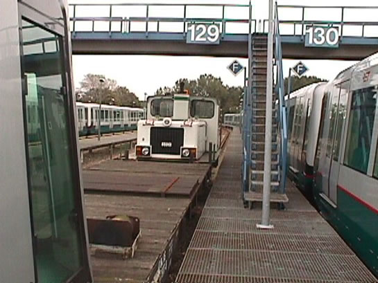
Op spoor 129 staat het transportgeheel al klaar voor vertrek...
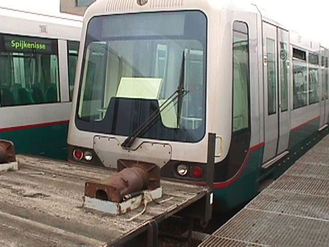
Gekoppeld aan twee platte wagens (koppelwagen en remwagen) wordt de combinatie naar de Kleiweg vervoerd.
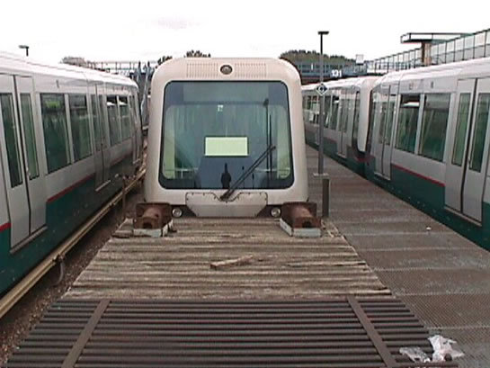
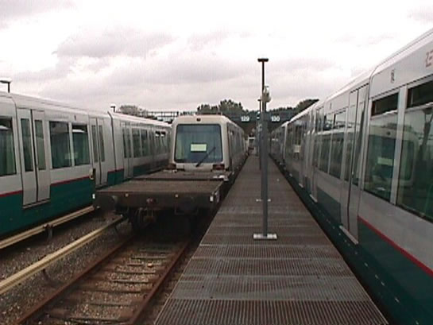
Het ziet er allemaal zeer breed uit, een platte wagen achter een 'smal' metrostel.
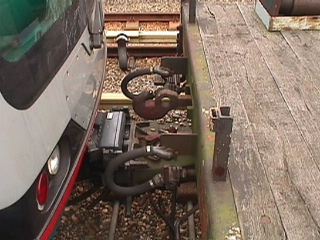
En dan hier de koppelwagen. Het was nog een redelijke klus om dit voor elkaar te krijgen.
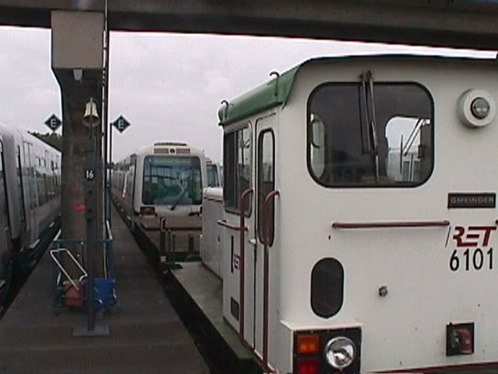
De 6101 rijdt metrostel 5336 en aanverwanten naar de aansluiting op het NS-spoor. De plaats van de 6101 zal dan worden vervangen door een Railion-locomotief.
Grote vertragingen op de Calandlijn
Gisteren werd met name de Calandlijn geteisterd door grote vertragingen als gevolg van storingen. Het begon gistermorgen, nabij station Schenkel spoor 2 strandde de combinatie 5214-5270(als wagendienst 572). Dit kwam door een pantograafstoring, waardoor de pantografen niet omhoog gingen en er dus geen hoogspanning aanwezig was.
Meteen werd er enkelspoorbedrijf gestart tussen Capelsebrug en Prinsenlaan, via spoor 1. De achterligger van wagendienst 572 (rijtuig 5235) werd gevraagd te koppelen aan de gestrandde combinatie, helaas lukte dit niet omdat de koppeldozen niet goed functioneerden. Medewerkers van depot 's-Gravenweg kwamen ter plaatse om de koppeldozen te repareren. In de tussentijd werd kruising Kralingseweg compleet bezet gehouden door de achterligger van wagendienst 572. Doordat deze even later de kruising weer afreed, gingen de AHOB's compleet in de storing. Capelle a/d IJssel was hierdoor met geen mogelijkheid meer direct te bereiken, wat weer zorgde voor stress bij de politie. Er stond inmiddels een file tot de J. Duthillweg.
Na anderhalf uur lukte het de treinen te koppelen en werd gereden naar Prinsenlaan spoor 1, alwaar gekeerd werd. Doordat er in 2 delen gekeerd werd (de combinatie werd gesplitst) gaat AHOB Burgaslaan even later óók in storing. Het tweede deel van de gesplitste combinatie strand later tevens in het wisselcomplex van Prinsenlaan. Door dit alles wordt er wederom enkelsporig gerden tussen Prinsenlaan en Capelsebrug, nu via spoor 2. Uiteindelijk is het tweede deel van de combinatie in z'n achteruit naar emplacement 's-Gravenweg gerden met een max. snelheid van 8 km/h.
Graskruid
Ook op station Graskruid ontstaan op een gegeven moment vertragingen. Dit als gevolg van een aggressieve reiziger, die de bestuurder lastig viel. Hierdoor sneuvelden diverse ruiten, en was er voor 20 minuten geen metroverkeer mogelijk tussen station de Tochten, station Binnenhof en Alexander op spoor 1. Ook kwam dit doordat politiemedewerkers van bureau Halt de achtervolging inzetten naar de agressieve reiziger, en noodgedwongen het spoor opliepen.
Schiedam Centrum
Wie dacht dat we nu alles gehad hadden, heeft het mis. Even later komen er op station Schiedam Centrum spontaan valse bezetmeldingen in perronspoor 1. Ook op Marconiplein vallen er rijwegen onder de treinen weg, waardoor deze actief geremd staan en niet meer weg te krijgen zijn zonder een hulprijsignaal. (Zie ATB-Informatiepagina). Mede hierdoor liepen vertragingen op een gegeven moment op tot 40 minuten. Omdat er geen reserve-materieel beschikbaar was, konden defecte treinen niet vervangen worden.Rond 14.00 uur reden de meeste metrodiensten weer volgens de dienstregeling.
Werkzaamheden station de Akkers
Op station de Akkers worden nog steeds werkzaamheden uitgevoerd t.b.v. de revitalisatie ervan. Er worden granietstenen tegels gelegd en er wordt gewerkt aan de dakbedekking. Gisteravond stond de combinatie 5304-5330-5340 op spoor 1, om te voorkomen dat de rijweg naar dit spoor er inliep en zo de bouwvakkers op spoor 1 veilig konden werken.
Rik Roeske was ter plaatse op De Akkers en maakte onderstaande foto's:
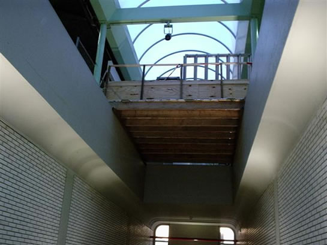
Vanaf de ingang is het bovenstaande te zien: er wordt duidelijk geklust!
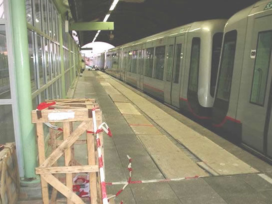
Om te voorkomen dat er treinen halteren op spoor 1, wordt er een bezetmelding veroorzaakt met een drietal Bombardier-rijtuigen. Zo is de veiligheid langs het spoor voor de bouwvakkers gegarandeerd.
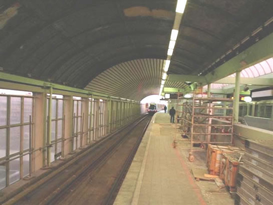
Ook het dak wordt flink verbouwd. Het geheel oogt nu als een tunnel.
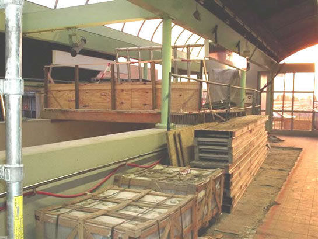
Sommige delen van het perron zijn tijdelijk afgezet, omdat er bijvoorbeeld bouwmateriaal ligt.
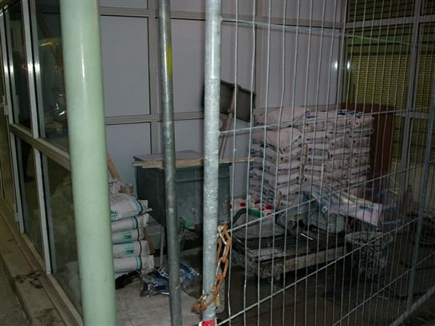
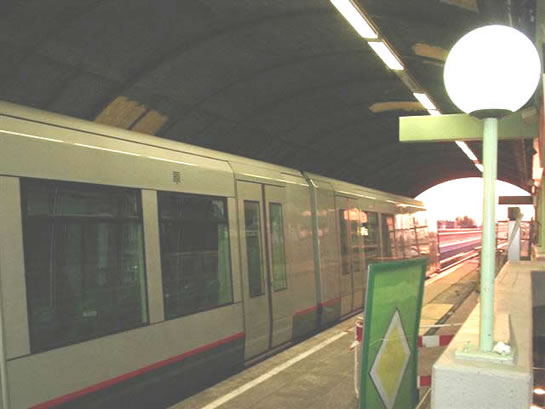